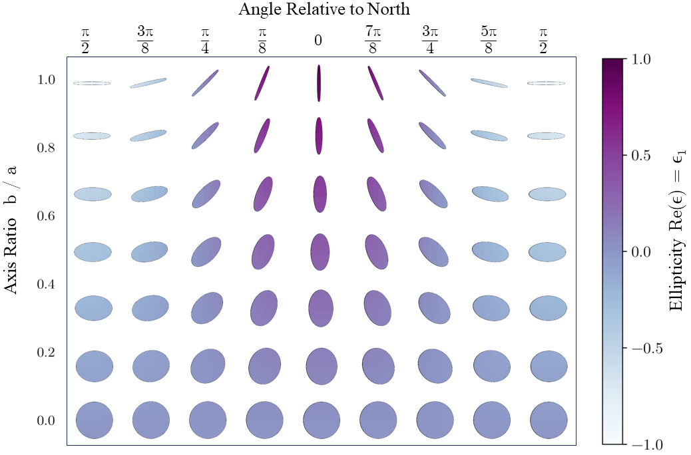

The large-scale structure of the Universe leaves its mark on visible matter through subtle correlations involving galaxy shapes, galaxy spins, and the underlying cosmic web. These “Intrinsic Alignments” can only be observed with tens of thousands of galaxies. But how do we quantify them? For the long answer, see “The IA Guide”, now on arXiv! For the short answer, keep reading.
Individual galaxies are beautifully unique and complex objects. But as an observational cosmologist, I see them as millions of flat ovals on the sky. Each galaxy can be described by a number, ellipticity, which contains information about how round the galaxy is and its orientation.
 We explore how these shapes correlate with other properties by measuring them relative to some direction, such as another galaxy or dense regions of the cosmic web. My cat kindly agreed to demonstrate various ellipticities relative to the most important direction, her food.
We explore how these shapes correlate with other properties by measuring them relative to some direction, such as another galaxy or dense regions of the cosmic web. My cat kindly agreed to demonstrate various ellipticities relative to the most important direction, her food.
Simulations tell us that, statistically, galaxy shapes have “intrinsic alignment” relative to clusters and filaments in the cosmic web. But the large-scale structure of the Universe also systematically distorts the light of galaxies, known as “weak lensing”. This is like the distortion you see in galaxy shapes in the JWST deep field, except very subtle.
There are many correlations involving galaxy shapes, positions, and lensing. It`s important to untangle them in order to get accurate cosmological information out of weak lensing observations and other surveys. It also can be used to directly explore cosmology by studying the imprint that cosmological effects have on Intrinsic Alignments.
It`s tricky to keep track of the different ways to quantify these correlations! There are many estimators, depending on what information you`re interested in and what data you`re working with. Therefore, a group of other early career scientists and myself put together The IA Guide. The IA Guide contains a collection of IA formalisms, estimators, modeling approaches, alternative notations, and useful references. We hope others find it as useful as we do!
Galaxy Alignment and Cosmology
 Studying the 3D shapes of galaxies involves modeling lots of ellipsoids and understanding how they project to a surface, like the sky.
Studying the 3D shapes of galaxies involves modeling lots of ellipsoids and understanding how they project to a surface, like the sky.
Click here for an accessible summary of my latest RSD paper!
I am an observational cosmologist. Matter in the universe, and therefore galaxies, forms what we call a
large-scale structure. It basically looks like a giant sponge – made up of strands and sheets of matter, with large voids that contain almost no matter. There are several statistics that we use to quantify this structure. They basically measure how “clumpy” the distribution of galaxies are.
DESI needs to measure these very precisely in order to distinguish between different models of dark energy, which means that we have to consider MANY difference sources of systematic errors. My work is exploring one of these sources.
The types of galaxies I look at are basically 3D ovals, and DESI is more likely to observe a galaxy if its long axis is pointed at us. This is because its light is more concentrated on the sky and it appears to have a higher surface brightness. This is a problem because the orientations of galaxies are ALSO aligned with the matter density that we are trying to measure.
Here is how I would summarize my work with IA and RSD to different audiences:
Kindergartener
I use a telescope to look very far away at big clumps of stars. We wonder about where everything came from, and how it all started.
High Schooler
The universe is expanding, and its expansion is increasing. We’re not sure what force is driving this, but we call it dark energy.
We’re using a telescope to observe 30 MILLION galaxies and making the most detailed map of the universe yet!
I help measure the statistics which quantify how galaxies are distributed and how that distribution has changed over time. This will help us better understand what’s up with dark energy.
Astronomy Undergraduate Student
I’m helping with a spectroscopic galaxy survey, DESI. My project is measuring the correlation between galaxy shapes and the underlying density field. This is important because DESI’s target selection is dependent on galaxy orientation, which is tied to said density field.
Cosmologist
I’m measuring the projected shape-density correlation of Luminous Red Galaxies in DESI’s Legacy Imaging Survey. I’m also modeling the net polarization of LRGs due to DESI’s fiber magnitude-based selection. These effects combine to create a systematic bias in DESI’s measurement of the RSD quadrupole. We’re interpreting the IA signal via a suite of cosmological n-body simulations, AbacusSummit, and a linear tidal model.